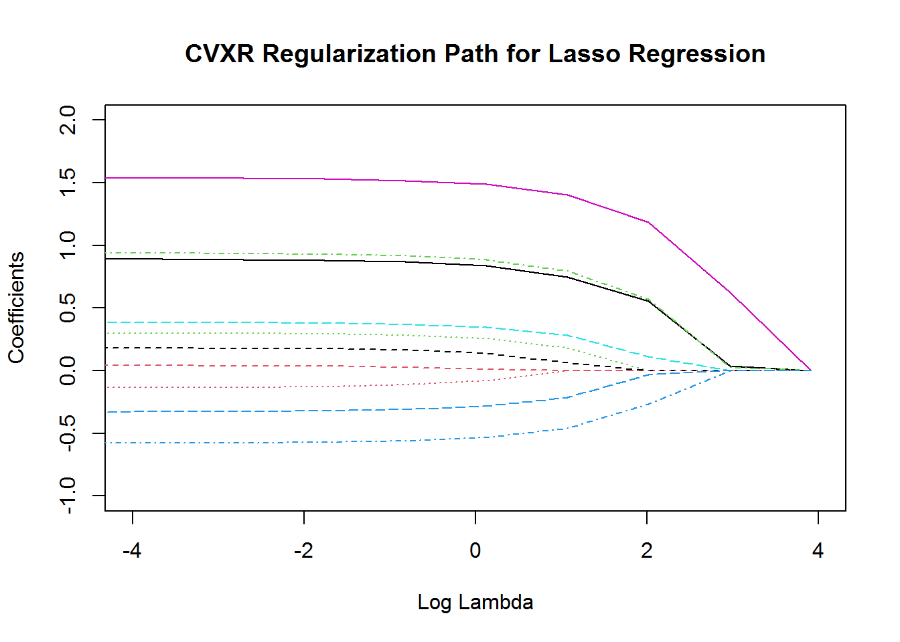

Chapter 10 Lasso and Elastic Net
10.1 Goals
- Formulate lasso and elastic net regression models
- Compare with results from
glmnetpackage - Use loss functions besides squared loss with elastic net penalty
10.2 Regularized Regression
Often in applications, we encounter problems that require regularization to prevent overfitting, introduce sparsity, facilitate variable selection, or impose prior distributions on parameters. Two of the most common regularization functions are the \(l_1\)-norm and squared \(l_2\)-norm, combined in the elastic net regression model (H. Zou (2005) and Friedman, Hastie, and Tibshirani (2010)).
\[ \begin{array}{ll} \underset{\beta}{\mbox{minimize}} & \frac{1}{2m}\|y - X\beta\|_2^2 + \lambda(\frac{1-\alpha}{2}\|\beta\|_2^2 + \alpha\|\beta\|_1). \end{array} \]
Here \(\lambda \geq 0\) is the overall regularization weight and \(\alpha \in [0,1]\) controls the relative \(l_1\) versus squared \(l_2\) penalty. Thus, this model encompasses both ridge (\(\alpha = 0\)) and lasso (\(\alpha = 1\)) regression.
It is convenient to define a function that calculates just the regularization term given the variable and penalty parameters. This modular approach will allow us to easily incorporate elastic net regularization into other regression models as we will see below.
#' Define the elastic penalty
#' @param beta the arg min variable
#' @param lambda the penalization parameter
#' @param alpha the elastic net parameter, 0 = ridge, 1 = lasso
elastic_penalty <- function(beta, lambda = 0, alpha = 0) {
ridge <- (1 - alpha) / 2 * sum_squares(beta)
lasso <- alpha * cvxr_norm(beta, 1)
lambda * (lasso + ridge)
}We generate some synthetic sparse data for this example.
## Problem data
set.seed(4321)
p <- 10
n <- 500
DENSITY <- 0.25 # Fraction of non-zero beta
beta_true <- matrix(rnorm(p), ncol = 1)
idxs <- sample.int(p, size = floor((1 - DENSITY) * p), replace = FALSE)
beta_true[idxs] <- 0
sigma <- 45
X <- matrix(rnorm(n * p, sd = 5), nrow = n, ncol = p)
eps <- matrix(rnorm(n, sd = sigma), ncol = 1)
Y <- X %*% beta_true + epsWe fit the elastic net model for several values of \(\lambda\).
TRIALS <- 10
beta_vals <- matrix(0, nrow = p, ncol = TRIALS)
lambda_vals <- 10^seq(-2, log10(50), length.out = TRIALS)beta <- Variable(p)
loss <- sum_squares(Y - X %*% beta) / (2 * n)
## Elastic-net regression LASSO
alpha <- 1
beta_vals <- sapply(lambda_vals,
function (lambda) {
obj <- loss + elastic_penalty(beta, lambda, alpha)
prob <- Problem(Minimize(obj))
result <- solve(prob)
result$getValue(beta)
})We can now get a table of the coefficients.
| \(\lambda = 0.010\) | \(\lambda = 0.026\) | \(\lambda = 0.066\) | \(\lambda = 0.171\) | \(\lambda = 0.441\) | \(\lambda = 1.135\) | \(\lambda = 2.924\) | \(\lambda = 7.533\) | \(\lambda = 19.408\) | \(\lambda = 50.000\) | |
|---|---|---|---|---|---|---|---|---|---|---|
| \(\beta_{1}\) | 0.891 | 0.890 | 0.888 | 0.883 | 0.870 | 0.836 | 0.747 | 0.553 | 0.038 | 0 |
| \(\beta_{2}\) | 0.040 | 0.040 | 0.039 | 0.036 | 0.028 | 0.009 | 0.000 | 0.000 | 0.000 | 0 |
| \(\beta_{3}\) | 0.301 | 0.300 | 0.299 | 0.294 | 0.283 | 0.254 | 0.181 | 0.000 | 0.000 | 0 |
| \(\beta_{4}\) | -0.579 | -0.578 | -0.576 | -0.572 | -0.561 | -0.533 | -0.458 | -0.265 | 0.000 | 0 |
| \(\beta_{5}\) | 0.386 | 0.385 | 0.384 | 0.380 | 0.371 | 0.347 | 0.283 | 0.114 | 0.000 | 0 |
| \(\beta_{6}\) | 1.538 | 1.538 | 1.536 | 1.531 | 1.519 | 1.487 | 1.403 | 1.186 | 0.627 | 0 |
| \(\beta_{7}\) | 0.181 | 0.180 | 0.178 | 0.174 | 0.163 | 0.136 | 0.065 | 0.000 | 0.000 | 0 |
| \(\beta_{8}\) | -0.134 | -0.134 | -0.132 | -0.127 | -0.114 | -0.082 | 0.000 | 0.000 | 0.000 | 0 |
| \(\beta_{9}\) | 0.939 | 0.938 | 0.936 | 0.931 | 0.918 | 0.885 | 0.794 | 0.570 | 0.026 | 0 |
| \(\beta_{10}\) | -0.329 | -0.328 | -0.327 | -0.322 | -0.312 | -0.284 | -0.215 | -0.030 | 0.000 | 0 |
We plot the coefficients against the regularization.
plot(0, 0, type = "n", main = "CVXR Regularization Path for Lasso Regression",
xlab = "Log Lambda", ylab = "Coefficients",
ylim = c(-1, 2), xlim = c(-4, 4))
matlines(log(lambda_vals), t(beta_vals))
We then compare with the glmnet results.
model_net <- glmnet(X, Y, family = "gaussian", alpha = alpha,
lambda = lambda_vals,
standardize = FALSE,
intercept = FALSE,
thresh = 1e-8)
## Reverse order to match beta_vals
coef_net <- as.data.frame(as.matrix(coef(model_net)[-1, seq(TRIALS, 1, by = -1)]))| \(\lambda = 0.010\) | \(\lambda = 0.026\) | \(\lambda = 0.066\) | \(\lambda = 0.171\) | \(\lambda = 0.441\) | \(\lambda = 1.135\) | \(\lambda = 2.924\) | \(\lambda = 7.533\) | \(\lambda = 19.408\) | \(\lambda = 50.000\) | |
|---|---|---|---|---|---|---|---|---|---|---|
| \(\beta_{1}\) | 0.891 | 0.890 | 0.888 | 0.883 | 0.870 | 0.836 | 0.747 | 0.553 | 0.038 | 0 |
| \(\beta_{2}\) | 0.040 | 0.040 | 0.039 | 0.036 | 0.028 | 0.009 | 0.000 | 0.000 | 0.000 | 0 |
| \(\beta_{3}\) | 0.301 | 0.300 | 0.299 | 0.294 | 0.283 | 0.254 | 0.181 | 0.000 | 0.000 | 0 |
| \(\beta_{4}\) | -0.579 | -0.578 | -0.576 | -0.572 | -0.561 | -0.533 | -0.458 | -0.265 | 0.000 | 0 |
| \(\beta_{5}\) | 0.386 | 0.385 | 0.384 | 0.380 | 0.371 | 0.347 | 0.283 | 0.114 | 0.000 | 0 |
| \(\beta_{6}\) | 1.538 | 1.538 | 1.536 | 1.531 | 1.519 | 1.487 | 1.403 | 1.186 | 0.627 | 0 |
| \(\beta_{7}\) | 0.181 | 0.180 | 0.178 | 0.174 | 0.163 | 0.136 | 0.065 | 0.000 | 0.000 | 0 |
| \(\beta_{8}\) | -0.134 | -0.134 | -0.132 | -0.127 | -0.114 | -0.082 | 0.000 | 0.000 | 0.000 | 0 |
| \(\beta_{9}\) | 0.939 | 0.938 | 0.936 | 0.931 | 0.918 | 0.885 | 0.794 | 0.570 | 0.026 | 0 |
| \(\beta_{10}\) | -0.329 | -0.328 | -0.327 | -0.322 | -0.312 | -0.284 | -0.215 | -0.030 | 0.000 | 0 |
10.2.1 Exercise
I’m attempting to match some simple results in R using glmnet and
CVXR. I have the following code.
library(glmnet)
data(QuickStartExample)
x <- QuickStartExample$x
y <- QuickStartExample$y
catn <- function(...) cat(..., "\n")
objective_value <- function(y, x, coefs, lambda, alpha) {
n <- nrow(x)
ridge <- sum(coefs^2) ; l1 <- sum(abs(coefs))
sum((y - (x %*% coefs))^2) / (2 * n) + lambda * ((1 - alpha) / 2 * ridge + alpha * l1)
}
alpha <- 0; lambda <- 1;
fit <- glmnet(x, y, intercept=F, standardize=F, lambda=1, alpha=0)which gives me one set of coefficients and the objective function
value 2.559086 via
objective_value(y, x, coef(fit)[-1, ], lambda, alpha)## [1] 2.573793but this CVXR code
beta <- Variable(20)
elastic_reg <- function(beta, lambda = 0, alpha = 0) {
ridge <- (1 - alpha) * sum(beta^2) * .5
lasso <- alpha * p_norm(beta, 1)
lambda * (lasso + ridge)
}
loss <- sum((y - x %*% beta)^2)/(2*length(y))
obj <- loss + elastic_reg(beta, lambda = 1, 0)
prob <- Problem(Minimize(obj))
result <- solve(prob)
print(result$value)## [1] 2.172438gives a different objective value 2.859259 and a somewhat different set of
coefficients. Can you help?
10.2.1.1 Solution
To compare glmnet results to CVXR for the Gaussian case, it is
advisable to standardize the response per the glmnet documentation.
Note also that glmnet uses \(n\) rather than \(n-1\) in the denominator
for \(y\). This will ensure that the \(\lambda\) is on the same scale as
shown below.
catn <- function(...) cat(..., "\n")
## Standardize the y
y_s <- local({
n <- length(y)
m <- mean(y); s <- as.numeric(sqrt(var(y) * (n - 1) / n));
result <- (y - m) / s ## scale using 1/n
attr(result, "scaled:center") <- m
attr(result, "scaled:scale") <- s
result
})We can do a comparison on the standardized \(y\). First, the glmnet answer:
## STANDARDIZED COMPARISON
fit_s <- glmnet(x, y_s, intercept=F, standardize=F, lambda = lambda, alpha=alpha)
catn("Glmnet objective (scaled y)",
objective_value(y_s, x, coef(fit_s)[-1], lambda, alpha))## Glmnet objective (scaled y) 0.2504412Next, the CVXR answer:
elastic_reg <- function(beta, lambda = 0, alpha = 0) {
ridge <- (1 - alpha) / 2 * sum_squares(beta)
lasso <- alpha * p_norm(beta, 1)
lambda * (lasso + ridge)
}
loss <- sum_squares(y_s - x %*% beta) / (2 * nrow(x))
obj <- loss + elastic_reg(beta, lambda = lambda, alpha)
prob <- Problem(Minimize(obj))
beta_est <- solve(prob)$getValue(beta)
catn("CVXR objective (scaled y):", objective_value(y_s, x, beta_est, lambda, alpha))## CVXR objective (scaled y): 0.2504412To work on the non-standardized scale, we need to match the lamba
values as noted by the glmnet authors in Appendix 2 of the package
vignette (Friedman, Hastie, and Tibshirani 2010).
## NONSTANDARDIZED COMPARISON
fit <- glmnet(x, y, intercept=F, standardize=F, lambda = lambda, alpha=alpha)
catn("Glmnet objective (unscaled y)", objective_value(y, x, coef(fit)[-1], lambda, alpha))## Glmnet objective (unscaled y) 2.573793loss <- sum_squares(y - x %*% beta) / (2 * nrow(x))
obj <- loss + elastic_reg(beta, lambda = lambda / attr(y_s, "scaled:scale"), alpha)
prob <- Problem(Minimize(obj))
beta_est <- solve(prob)$getValue(beta)
catn("CVXR objective (unscaled y)", objective_value(y, x, beta_est, lambda, alpha))## CVXR objective (unscaled y) 2.559093Finally, we can check that the coefficients are close enough.
print_matrix(round(cbind(beta_est, coef(fit)[-1]), 3),
row_names = sprintf("$\\beta_{%d}$", seq_len(20)),
col_names = c("CVXR", "GLMNET")) | CVXR | GLMNET | |
|---|---|---|
| \(\beta_{1}\) | 1.117 | 1.123 |
| \(\beta_{2}\) | 0.070 | 0.069 |
| \(\beta_{3}\) | 0.568 | 0.571 |
| \(\beta_{4}\) | 0.007 | 0.008 |
| \(\beta_{5}\) | -0.683 | -0.687 |
| \(\beta_{6}\) | 0.537 | 0.539 |
| \(\beta_{7}\) | 0.121 | 0.121 |
| \(\beta_{8}\) | 0.302 | 0.304 |
| \(\beta_{9}\) | -0.075 | -0.074 |
| \(\beta_{10}\) | 0.054 | 0.055 |
| \(\beta_{11}\) | 0.143 | 0.144 |
| \(\beta_{12}\) | -0.073 | -0.073 |
| \(\beta_{13}\) | -0.029 | -0.029 |
| \(\beta_{14}\) | -0.932 | -0.937 |
| \(\beta_{15}\) | -0.077 | -0.078 |
| \(\beta_{16}\) | 0.018 | 0.018 |
| \(\beta_{17}\) | 0.008 | 0.007 |
| \(\beta_{18}\) | 0.009 | 0.010 |
| \(\beta_{19}\) | 0.031 | 0.031 |
| \(\beta_{20}\) | -0.784 | -0.790 |
10.2.2 Exercise
Using the data (X, Y) above, solve an elastic net problem with
Huber loss using the Huber
threshold \(M = 0.5\).
10.2.2.1 Solution
Just set the loss as follows.
beta <- Variable(p)
loss <- sum(huber(Y - X %*% beta, M = 0.5))
## Elastic-net regression LASSO
alpha <- 1
beta_vals <- sapply(lambda_vals,
function (lambda) {
obj <- loss + elastic_penalty(beta, lambda, alpha)
prob <- Problem(Minimize(obj))
result <- solve(prob)
result$getValue(beta)
})The estimates are below.
| \(\lambda = 0.010\) | \(\lambda = 0.026\) | \(\lambda = 0.066\) | \(\lambda = 0.171\) | \(\lambda = 0.441\) | \(\lambda = 1.135\) | \(\lambda = 2.924\) | \(\lambda = 7.533\) | \(\lambda = 19.408\) | \(\lambda = 50.000\) | |
|---|---|---|---|---|---|---|---|---|---|---|
| \(\beta_{1}\) | 0.538 | 0.538 | 0.538 | 0.538 | 0.536 | 0.534 | 0.527 | 0.497 | 0.431 | 0.149 |
| \(\beta_{2}\) | -0.371 | -0.371 | -0.371 | -0.371 | -0.370 | -0.370 | -0.369 | -0.352 | -0.351 | -0.147 |
| \(\beta_{3}\) | 0.424 | 0.424 | 0.424 | 0.424 | 0.423 | 0.422 | 0.421 | 0.433 | 0.391 | 0.195 |
| \(\beta_{4}\) | -0.874 | -0.874 | -0.874 | -0.874 | -0.873 | -0.873 | -0.871 | -0.871 | -0.798 | -0.638 |
| \(\beta_{5}\) | -0.129 | -0.129 | -0.129 | -0.129 | -0.129 | -0.129 | -0.130 | -0.128 | -0.084 | 0.000 |
| \(\beta_{6}\) | 1.233 | 1.233 | 1.233 | 1.233 | 1.233 | 1.232 | 1.230 | 1.237 | 1.155 | 0.828 |
| \(\beta_{7}\) | -0.067 | -0.067 | -0.066 | -0.066 | -0.066 | -0.064 | -0.060 | -0.023 | -0.059 | 0.000 |
| \(\beta_{8}\) | -0.590 | -0.590 | -0.590 | -0.590 | -0.589 | -0.586 | -0.580 | -0.559 | -0.494 | -0.116 |
| \(\beta_{9}\) | 1.419 | 1.419 | 1.419 | 1.418 | 1.417 | 1.414 | 1.407 | 1.377 | 1.310 | 0.987 |
| \(\beta_{10}\) | -0.266 | -0.266 | -0.266 | -0.266 | -0.266 | -0.265 | -0.265 | -0.255 | -0.225 | -0.069 |